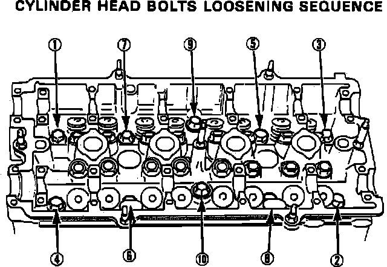
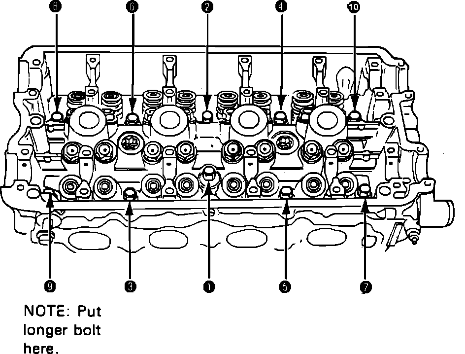
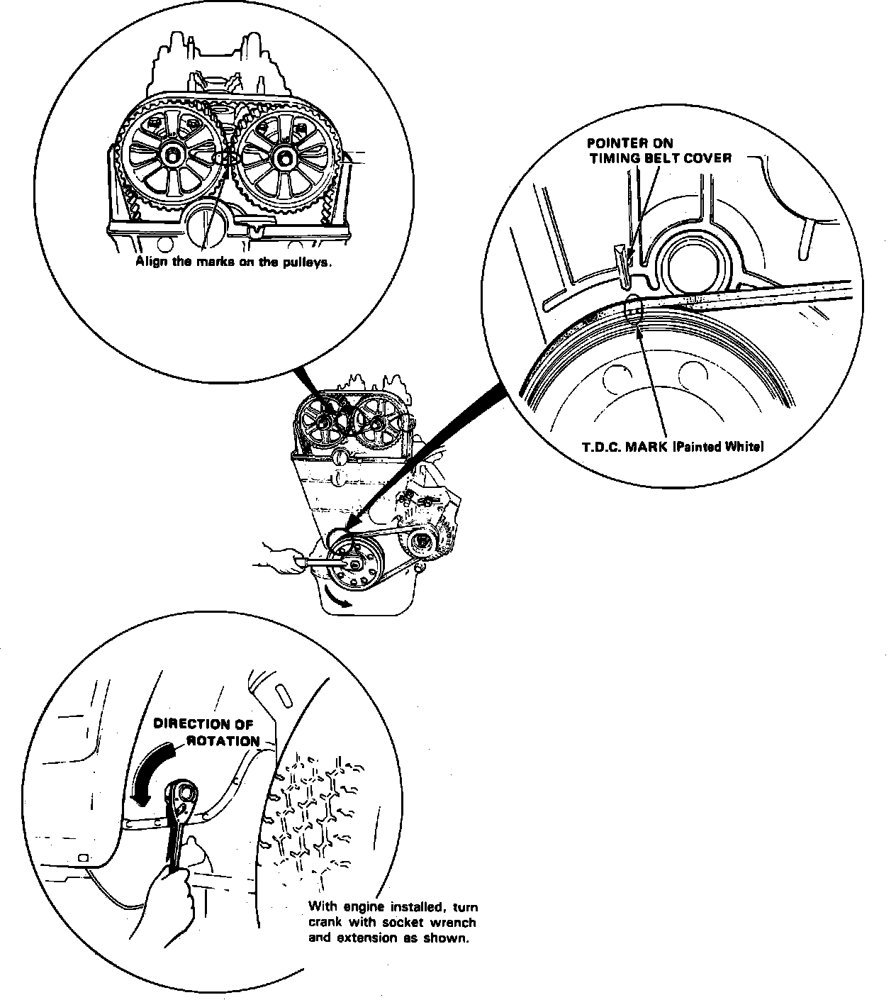

Cylinder Head Assembly: Service and Repair
NOTE: Do not remove cylinder head until temperature is below 100°F.Fig. 4 Fuel Pressure Relief:

1. On models equipped with radio coded theft protection system, refer to Vehicle Damage Warnings for system disarming and arming procedures. On models equipped with airbag system, refer to Technician Safety Information for system disarming and arming procedures.
2. Disconnect battery ground and positive cables.
3. Position No. 1 cylinder at TDC compression stroke, then drain coolant.
4. Relieve fuel pressure, then remove fuel filler cap. Place shop towel over area, then slowly loosen service bolt on fuel filter one turn at a time, Fig. 4.
5. Disconnect fuel feed hose.
6. Disconnect vacuum hose, breather hose and air intake hose.
7. Disconnect water bypass hose from cylinder head.
8. Disconnect charcoal canister and brake booster vacuum hoses from intake manifold.
9. Disconnect fuel return hose.
10. Disconnect PCV hose.
11. Disconnect throttle cable from throttle body.
12. Disconnect distributor electrical connectors.
13. Remove spark plug caps and distributor.
14. Disconnect emission control bracket electrical connectors, then remove bracket. Do not disconnect emission hoses.
15. Disconnect the following electrical connectors:
a. Fuel injectors.
b. TA sensor.
c. Throttle angle sensor.
d. EGR valve lift sensor.
e. Ground cable.
f. TW sensor.
g. Coolant temperature sender gauge.
h. EACV and oxygen sensor.
16. Remove upper radiator hose and heater inlet hose from cylinder head.
17. Remove power steering belt and pump, then position aside. Do not disconnect pump hoses.
18. Raise and support vehicle.
19. Remove LH front wheel and LH splash shield.
20. Remove exhaust manifold upper shroud and bracket, exhaust pipe, then exhaust manifold.
21. Remove valve cover and engine ground cable.
22. Remove timing belt middle cover and adjusting bolt, then release timing belt.
23. Remove driven pulleys.
24. Remove camshaft holder bolts, then remove camshaft holders, camshafts and rocker arms.
Fig. 27 Cylinder Head Bolt Loosening Sequence:

25. Remove cylinder head attaching bolts in sequence, Fig. 27. Remove bolts 1/3 a turn at a time to prevent warpage. Remove cylinder head.
26. Remove intake manifold attaching bolts, then remove.
Fig. 25 Cylinder Head Bolt Tightening Sequence. Integra Except 1.7L/4-102:

Fig. 26 Timing Gear Marks:

27. Reverse procedure to install, noting the following:
a. Clean cylinder head and engine block mating surfaces prior to installation.
b. Ensure UP mark on timing belt pulley is positioned on top when installing cylinder head.
c. Install cylinder head using a new gasket, ensuring dowel pins and oil control jet are properly aligned with cutouts in gasket.
d. Apply clean engine oil to cylinder head attaching bolts and washers.
e. Torque cylinder head attaching bolts in two steps; first to 22 ft. lbs., then to 61 ft. lbs. in sequence, Fig. 25.
f. Install timing belt with cylinder No. 1 at TDC of compression stroke and timing marks aligned as shown in Fig. 26.
g. Torque intake manifold nuts to specifications using a crossing pattern in two or three steps.
28. On models equipped with radio coded theft protection system, refer to Vehicle Damage Warnings for system disarming and arming procedures. On models equipped with airbag system, refer to Technician Safety Information for system disarming and arming procedures.